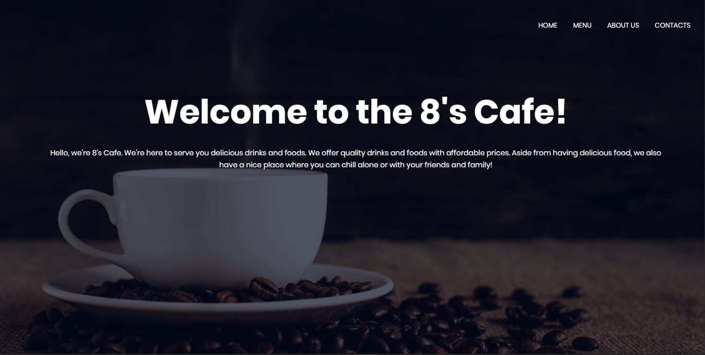
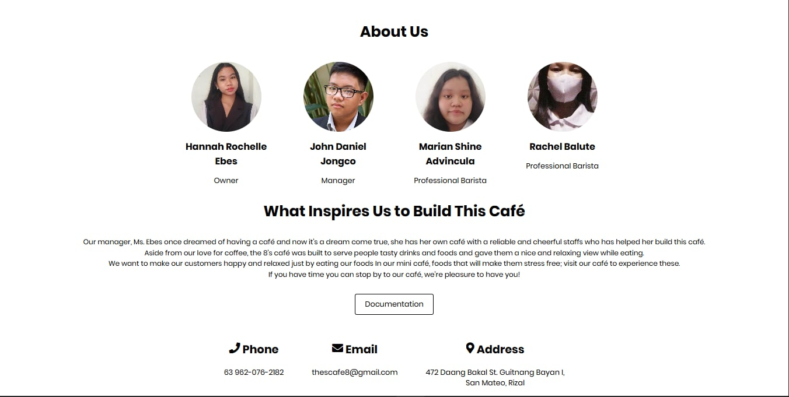
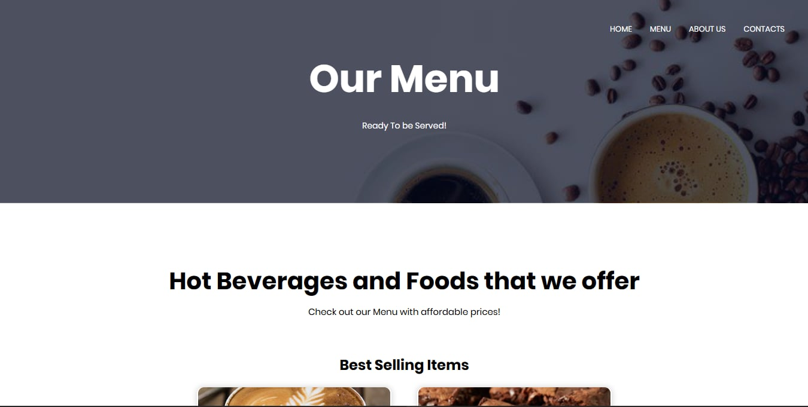
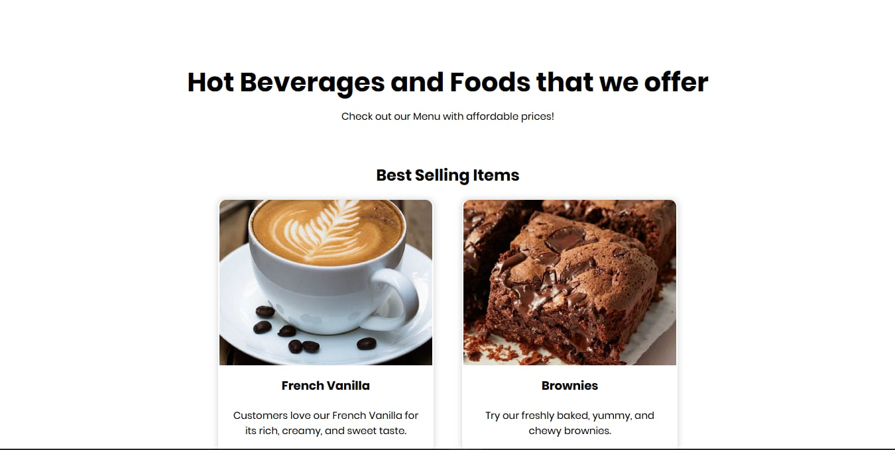
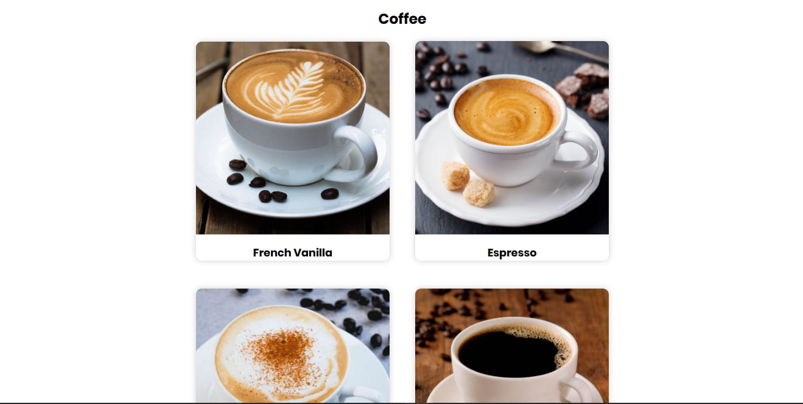
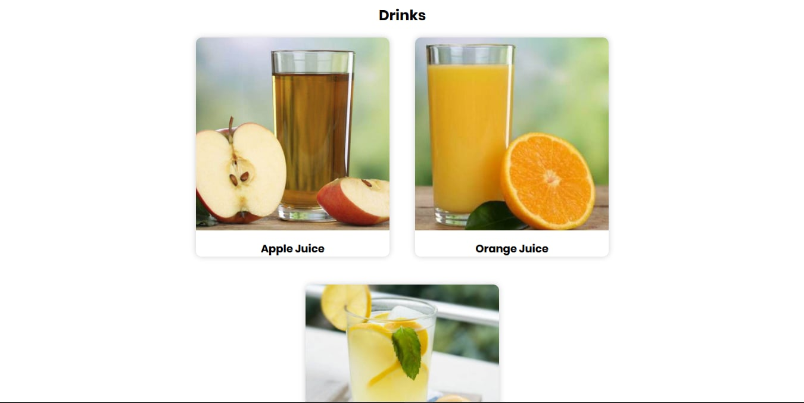
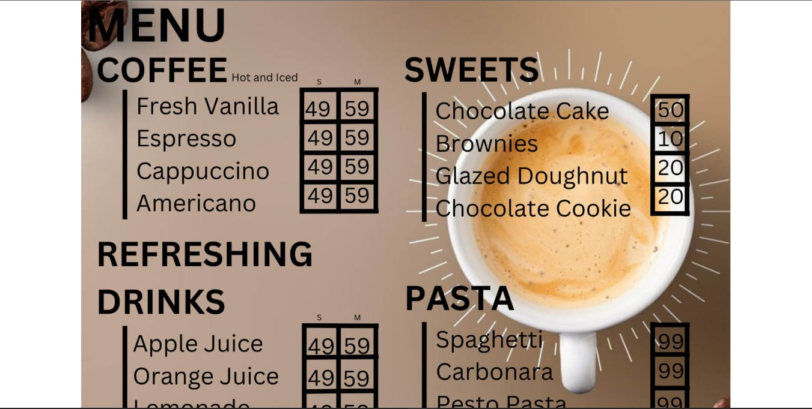
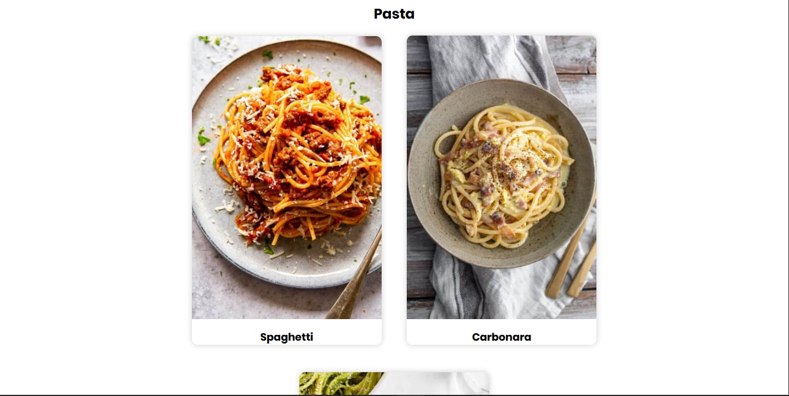
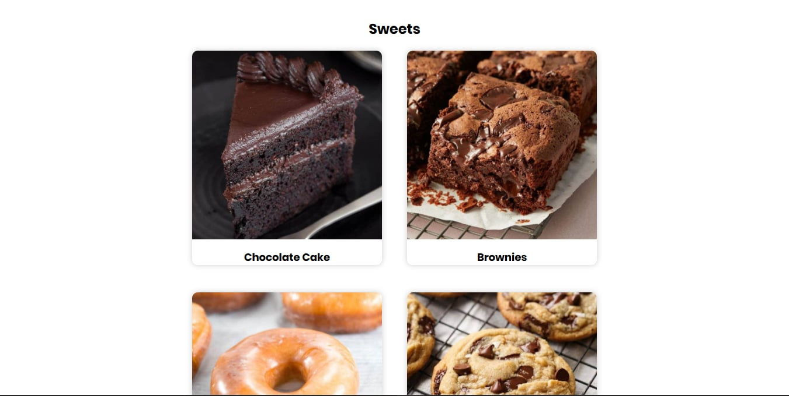

The 8's Cafe - Online Cafe Management System
"Experience authentic Japanese-inspired café ambiance"
A modern, interactive café website with integrated online ordering system designed for The 8's Cafe, a Japanese-inspired café offering premium coffee, delicious pastries, pasta, and beverages.
This website was originally developed as a Grade 10 project at San Mateo National High School. The initial concept was "8's Cafe," a simple café website created for academic purposes to demonstrate web development skills.
In early 2026, the website underwent a major transformation to become "Yuriel's Hideout" - a more polished, professional, and feature-rich café website. The revamp included:
The project demonstrates the evolution of web development skills from a Grade 10 beginner project to a more sophisticated, production-ready website suitable for a real café business.
The following images showcase the original "8's Cafe" website before the revamp to "Yuriel's Hideout". These screenshots demonstrate the initial design and layout that was later transformed into the modern Japanese-inspired café website.

Home Page - Hero Section

About and Contacts

General Menu

Sweets Selection

Coffee Menu

Drinks Menu

Original Menu

Pasta Selections

Sweets Selection
Yuriel's Hideout is a comprehensive café website that combines aesthetic design with functional e-commerce capabilities. The website serves as a digital storefront for The 8's Cafe, allowing customers to browse the menu, select items, and manage their orders through an intuitive shopping cart interface.
Immersive hero section with slideshow showcasing café ambiance and atmosphere.
Comprehensive menu with categories: Coffee, Sweets, Drinks, and Pasta with prices.
Full-featured cart with quantity management, total calculation, and checkout.
Modal-based contact form for customer inquiries and feedback.
Team introduction featuring the owner and co-owner of the café.
Fully responsive layout adapting seamlessly to all device sizes.
The website was built using standard web technologies combined with external libraries to enhance functionality and aesthetics.
The website is designed to cater to a diverse range of customers who are looking for a premium café experience, both in-person and online.
Customers who appreciate quality coffee and are willing to explore different café options.
Tech-savvy customers who prefer browsing menus and ordering from the comfort of their homes.
Individuals looking for catering options or special orders for gatherings.
Customers who access the site primarily through smartphones for quick ordering.
The design philosophy centers around creating an authentic Japanese-inspired café atmosphere while maintaining modern web usability standards.
The color palette was carefully selected to evoke warmth, sophistication, and the cozy feel of a traditional Japanese café.
Fixed/sticky navigation with logo, menu links, and visual hover effects. Uses underline animation on hover for interactivity.
Full-screen slideshow with Ken Burns effect, overlay gradient for text readability, animated text elements, and call-to-action button.
Card-based grid layout with item images, prices, quantity selectors, and "Add to Cart" buttons. Category-based organization (Best Selling, Coffee, Sweets, Drinks, Pasta).
Team member cards with circular profile images, names, and roles. Includes inspiration section.
Contact information cards with icons and a modal-based contact form for inquiries.
Slide-in modal from the right side with item list, quantity controls, total calculation, and checkout button.
Clear content organization with prominent CTAs and well-structured information flow.
Hover states, animations, and notifications provide immediate user feedback.
Responsive design ensures seamless experience across all device sizes.
Optimized images and efficient code for quick page loads.